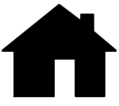

Liste des charges
Mettre ici la liste des charges
Visualisation de la pièce
Refrigerateur
Consommation électrique
Consommation en KWatt
- la consommation sur 1 semaine pour les 12 derniers mois : affichée sous forme d’histogramme pour une semaine avec une barre par jour de la semaine
Consommation en KWatt
la consommation sur 1 année depuis le début d’enregistrement : affichée sous forme d’histogramme pour 1 année avec une barre par mois
Consommation en KWatt